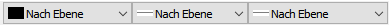
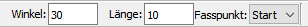
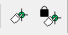
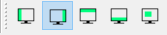
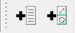
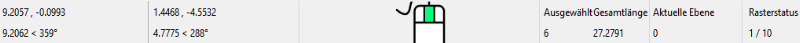
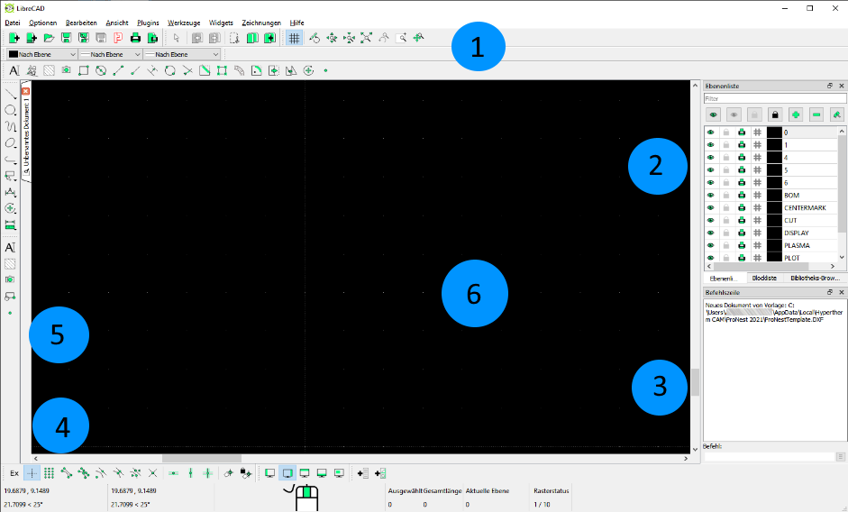

Navigation auf dem Hauptbildschirm
Der Haupt-Zeichenbildschirm in LibreCAD für ProNest kann umfassend angepasst werden; so können Sie beispielsweise Symbolleisten und Andockwidgets neu anordnen und in der Größe anpassen. Die Standard-Konfiguration wird im Folgenden beschrieben.
Im Hauptbereich der LibreCAD-Anwendung finden Sie im Allgemeinen sechs wichtige Arbeitsbereiche vor, die hier blau eingekreist sind.
- Hauptmenübereich
- Menüpunkte Datei, Optionen, Bearbeiten, Ansicht, Plugins, Werkzeuge, Widgets, Zeichnungen und Hilfe.
- Unter dem Hauptmenübereich finden Sie Datei-Optionsschaltflächen (zum Beispiel „Neue Zeichnung“, „Zeichnung öffnen“), Schaltflächen zum Kopieren und Einfügen sowie zum Vergrößern/verkleinern.

- Über der benutzerdefinierten Symbolleiste befinden sich die Stiftoptionen. Mit den Stiftoptionen können Sie Stiftfarbe, Strichstärke und Linienart steuern.

- Bei einigen Werkzeugen finden Sie die Eingabeaufforderung für Parameter in der Statusleiste. Die Statusleiste wird erst angezeigt, wenn Sie anfangen, mit einem Werkzeug wie Text zu arbeiten. Wenn sie aktiv ist, erscheint sie unter den Stiftoptionen. Schauen Sie bei der Benutzung von Werkzeugen in diesem Bereich nach Eingabeaufforderungen.

- Andockwidget-Bereich – Bibliotheks-Browser, Blockliste und Ebenenliste.
- Befehlszeile – Andockbereich für das Eingabefenster der Befehlszeile. Schauen Sie bei der Benutzung von Werkzeugen in diesem Bereich nach Eingabeaufforderungen.
- Fassen- und Statusleistenbereich
- Schaltflächen zum Fassen/Einschränken.

- Schaltflächen zum Festlegen und Fixieren des Relativen Nullpunkts.

- Symbolleistenoptionen ein-/ausblenden.

- Ersteller für Menüs und Symbolleisten.

- Unter den Schaltflächen befinden sich Informationen über Mauskoordinaten, Länge ausgewählter Objekte, aktuelle Ebene und Rasterstatus.

- Werkzeuge für schnellen Zugriff
- Menüs für die wichtigsten Zeichenwerkzeuge wie Linien, Kreise, Kurven, Ellipsen, Polylinien, Auswahl-, Bemaßungs-, Änderungs- und Messwerkzeuge.
- Zwischen den Werkzeugen und dem Hauptzeichenbildschirm befinden sich Zeichenstege. Die Stege werden vertikal gestapelt.
- Zeichenbereich – In diesem Bereich werden Objekte und Text gezeichnet. Außerdem können Bilddateien in eine Zeichnung importiert und platziert werden. Die Hintergrundfarbe ist standardmäßig Schwarz. Dies kann in den Anwendungseinstellungen geändert werden.
